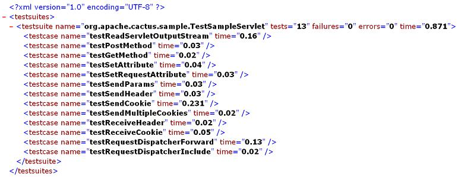
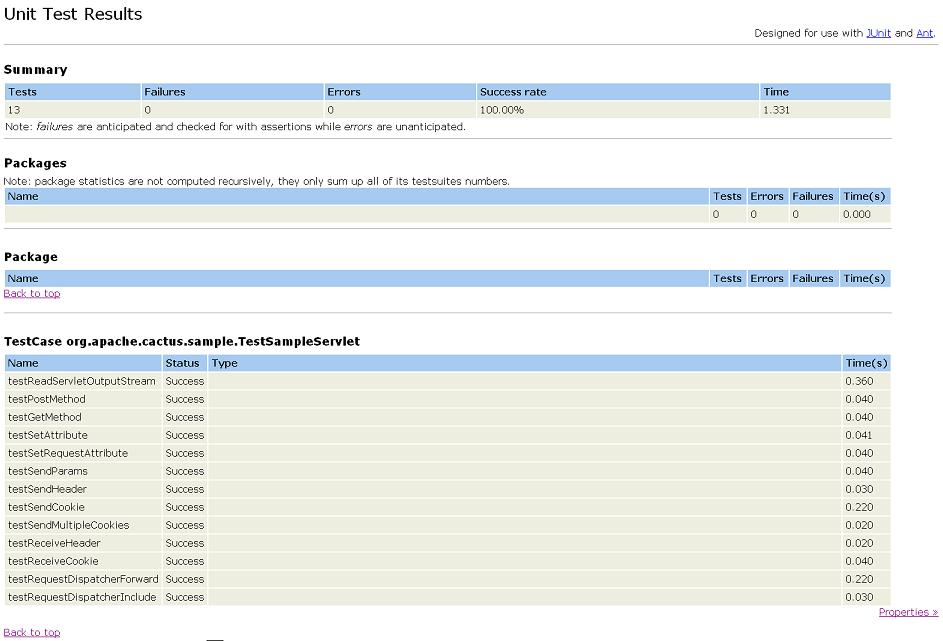

|
|
| Apache > Jakarta > Cactus > Running Tests | Docs for: v1.7.2 | v1.7 Last update: March 26 2006 |
Running Cactus tests from a browser
This section only applies for Cactus 1.4 and greater.
Step 1: Setting up the classpath
In order to run Cactus tests from a browser you need to have a webapp
containing your classes to test and your test classes. In addition,
both Cactus client side and server side jar classes must be able to be
loaded from your webapp (i.e located in your
Refer to the Classpath Howto
guide for the exact list of jars.
Step 2: Mapping the Cactus Servlet Test Runner
Then, in addition to the Cactus redirectors that you have mapped in
your
[...]
<servlet>
<servlet-name>ServletTestRunner</servlet-name>
<servlet-class>
org.apache.cactus.server.runner.ServletTestRunner
</servlet-class>
</servlet>
[...]
<servlet-mapping>
<servlet-name>ServletTestRunner</servlet-name>
<url-pattern>/ServletTestRunner</url-pattern>
</servlet-mapping>
[...]
Step 3: Executing the tests
Open a browser and type
Here is an example of what you will get:

If you see a blank page, click on the View source option of your
browser. It means your browser doesn't know how to display XML data.
Ok, that's nice ... But what if I want HTML instead of XML? Don't
worry there is a solution. Grab the following
XSLT stylesheet
(based on the stylesheet used by the
<junitreport> Ant task), drop it in your
webapp and name it

This will work with Internet Explorer as the XSL transformation is
performed on the client side (i.e by the browser). I'm not sure
about other browsers.
Enabling Server-Side XSLT TransformationsIn the previous section, the XSLT transformation was performed on the client. This requires a browser capable of doing XSLT transformations in a standards-compliant manner, and requires adding the location of the stylesheet as a request parameter. Since Cactus 1.5, the ServletTestRunner can also perform the transformation on the server-side. To enable that feature, make sure that a JAXP compliant XSLT processor (such as Xalan) is available to the web-application. In addition, the location of the XSLT stylesheet needs to specified as initialization parameter of the ServletTestRunner. For example:
[...]
<servlet>
<servlet-name>ServletTestRunner</servlet-name>
<servlet-class>
org.apache.cactus.server.runner.ServletTestRunner
</servlet-class>
<init-param>
<param-name>xsl-stylesheet</param-name>
<param-value>styles/cactus-report.xsl</param-value>
</init-param>
</servlet>
[...]
The specified path is relative to the root of the web-application. Of
course, the stylesheet needs to exist at that location. In contrast to
client-side transformations, the stylesheet may be placed somewhere
inside the
If all of the above is correctly set up, you can enable the actual
transformation by including a http://server:port/mywebapp/ServletTestRunner?suite=mytestcase&transform=yes
The stylesheet specified as initialization parameter is loaded when
the ServletTestRunner gets initialized. Changes to the stylesheet will
not get picked up until the web-application is reloaded.
|